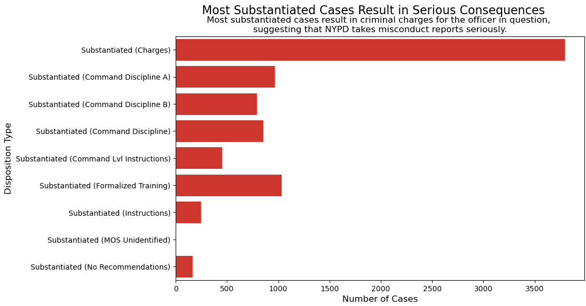
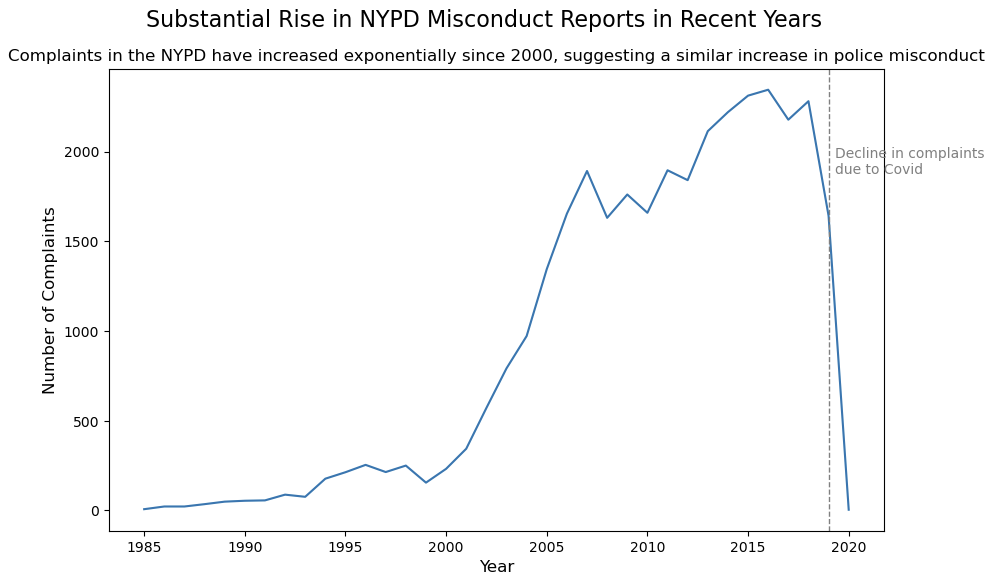

Proposition: The New York Police Department (NYPD) complaint data reflects accountability.
FOR the Proposition

Design Decisions and Rationale:
- Disciplinary action is sorted from most severe to least severe. I would give this around a -0.5 on the deceptiveness scale as it is meant to emphasize the fact that most substantiated cases are given harsh punishments. However, it is a logical way to display the graph as well, which is why I do not rate it as highly deceptive.
- Red color deliberately meant to both clash with the other visualization as well as adds emotional weight to the idea of discipline. I would give this a 0. While it does have some symbolic meaning in being red, to emphasize the idea of punishment, it was mostly just chosen as a way to clash with my other visualization.
- Deliberately did not include the number of unsubstantiated cases. This I would put as a -2 on the deceptiveness scale. If I included that figure, it would dwarf every other metric in the plot by several times.
AGAINST the Proposition

Design Decisions and Rationale:
- Deliberately chose a line graph to emphasize the rise in complaints over time. I would give this a 0.5 on the deceptiveness scale, it is a fair way to show changes across years, although it makes the upward trend feel a bit dramatic.
- The vertical dotted line and annotation about Covid are meant to explain the sudden fall off of complaints. I would give this a 1 on the deceptiveness scale, it is purely meant to explain the fall off to stop the viewer from being confused due to lack of context.
- Did not adjust for population growth. I would rate this as a -0.5. Although not necessarily misleading, not including this could give the impression that misconduct itself increased more massively than it actually has.
Final Reflection
While completing this project, I was honestly shocked at how easy it is to really mislead a viewer with small details. With the data, I could honestly come up with believeable visualizations for all sides of this argument. However, I did feel like it was a lot easier to come
up with a non-deceptive visualization for the side that was not in favor of the proposition, and almost had to intentionally omit information to make the visualization for the "against" side. At the same time, it is also still hard to eliminate all deceptive elements, even
with effort and good intention.
After completeing the project, I realized that ethical visualization is really about not forcing a certain viewpoint and really making sure that the exploratory data analysis is on point. It is much easier to put together an ethical visualization with a better idea of the
dataset, and a good handle of its context. Once you have these components, it is much easier to distinguish unethical details. I feel as though, if it takes a lot of effort to put together a visualization for a certain argument, there is high likelihood that it requires
deceptive elements to make it work.